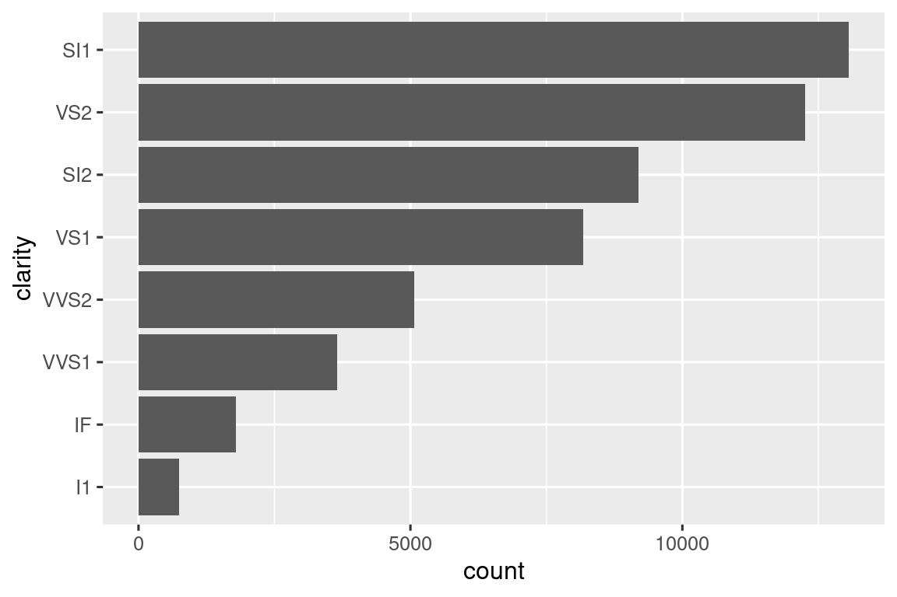
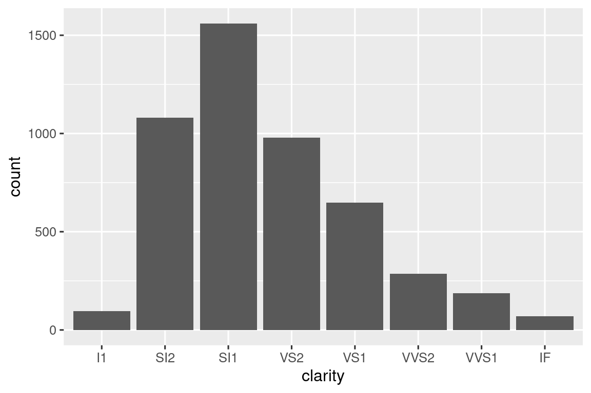

25 Συναρτήσεις
25.1 Εισαγωγή
Ένας από τους καλύτερους τρόπους για να βελτιώσετε τις ικανότητές σας ως επιστήμονας δεδομένων είναι γράφοντας συναρτήσεις. Οι συναρτήσεις σας επιτρέπουν να αυτοματοποιείτε συχνές εργασίες με έναν πιο ισχυρό και γενικευμένο τρόπο από την αντιγραφή και επικόλληση. Η σύνταξη μιας συνάρτησης έχει τέσσερα μεγάλα πλεονεκτήματα σε σχέση με τη χρήση της αντιγραφής και επικόλλησης:
Μπορείτε να δώσετε σε μία συνάρτηση ένα όνομα που να θυμάστε και που κάνει τον κώδικά σας πιο κατανοητό.
Καθώς οι απαιτήσεις αλλάζουν, χρειάζεται μόνο να αλλάξετε τον κώδικά σας σε ένα σημείο, αντί για πολλά.
Εξαλείφετε την πιθανότητα να αναπαράγετε λάθη που θα κάνατε χρησιμοποιώντας την αντιγραφή και επικόλληση (δηλαδή ενημερώνοντας ένα όνομα μεταβλητής σε ένα μέρος, αλλά όχι σε άλλο).
Διευκολύνει την επαναχρησιμοποίηση του κώδικά σας από project σε project, αυξάνοντας την παραγωγικότητά σας με την πάροδο του χρόνου.
Ένας καλός εμπειρικός κανόνας είναι να εξετάζετε το ενδεχόμενο να γράψετε μία συνάρτηση κάθε φορά που έχετε αντιγράψει και επικολλήσει ένα κομμάτι κώδικα περισσότερες από δύο φορές (δηλαδή έχετε τρία αντίγραφα του ίδιου κώδικα). Σε αυτό το κεφάλαιο, θα μάθετε για τρεις χρήσιμους τύπους συναρτήσεων:
- Οι διανυσματικές συναρτήσεις λαμβάνουν ένα ή περισσότερα διανύσματα ως είσοδο και επιστρέφουν ένα διάνυσμα ως έξοδο.
- Οι συναρτήσεις που εφαρμόζονται σε πλαίσια δεδομένων λαμβάνουν ένα πλαίσιο δεδομένων ως είσοδο και επιστρέφουν ένα πλαίσιο δεδομένων ως έξοδο.
- Συναρτήσεις διαγραμμάτων που λαμβάνουν ένα πλαίσιο δεδομένων ως είσοδο και επιστρέφουν ένα διάγραμμα ως έξοδο.
Κάθε μία από αυτές τις ενότητες περιλαμβάνει αρκετά παραδείγματα που θα σας βοηθήσουν να γενικεύσετε μοτίβα που βλέπετε. Αυτά τα παραδείγματα δεν θα ήταν διαθέσιμα χωρίς τη βοήθεια των φίλων μας στο twitter και σας προτείνουμε να ακολουθήσετε τους συνδέσμους στο σχόλιο για να δείτε τις αρχικές ιδέες. Μπορεί επίσης να θέλετε να διαβάσετε τα αρχικά tweets για τις γενικές λειτουργίες και συναρτήσεις διαγραμμάτων για να δείτε ακόμα περισσότερες συναρτήσεις.
25.1.1 Προαπαιτούμενα
Θα συνοψίσουμε μία ποικιλία συναρτήσεων από όλο το tidyverse. Θα χρησιμοποιήσουμε επίσης το σύνολο δεδομένων nycflights13 για να εφαρμόσουμε τις συναρτήσεις μας.
25.2 Διανυσματικές συναρτήσεις
Θα ξεκινήσουμε με τις διανυσματικές συναρτήσεις: συναρτήσεις που παίρνουν ένα ή περισσότερα διανύσματα ως είσοδο και επιστρέφουν ένα διάνυσμα ως αποτέλεσμα. Για παράδειγμα, ρίξτε μία ματιά σε αυτόν τον κώδικα. Τι κάνει;
df <- tibble(
a = rnorm(5),
b = rnorm(5),
c = rnorm(5),
d = rnorm(5),
)
df |> mutate(
a = (a - min(a, na.rm = TRUE)) /
(max(a, na.rm = TRUE) - min(a, na.rm = TRUE)),
b = (b - min(b, na.rm = TRUE)) /
(max(b, na.rm = TRUE) - min(a, na.rm = TRUE)),
c = (c - min(c, na.rm = TRUE)) /
(max(c, na.rm = TRUE) - min(c, na.rm = TRUE)),
d = (d - min(d, na.rm = TRUE)) /
(max(d, na.rm = TRUE) - min(d, na.rm = TRUE)),
)
#> # A tibble: 5 × 4
#> a b c d
#> <dbl> <dbl> <dbl> <dbl>
#> 1 0.339 2.59 0.291 0
#> 2 0.880 0 0.611 0.557
#> 3 0 1.37 1 0.752
#> 4 0.795 1.37 0 1
#> 5 1 1.34 0.580 0.394Ίσως μπορείτε να καταλάβετε ότι ο κώδικας αλλάζει τη κλίμακα κάθε στήλης έτσι ώστε κάθε μία να έχει εύρος από 0 έως 1. Βρήκατε όμως το λάθος; Όταν ο Hadley έγραψε αυτόν τον κώδικα, έκανε ένα λάθος κατά την αντιγραφή και επικόλληση και ξέχασε να αλλάξει το a σε b. Η αποτροπή αυτού του τύπου λάθους είναι ένας πολύ καλός λόγος για να μάθετε πώς να γράφετε συναρτήσεις.
25.2.1 Σύνταξη μιας συνάρτησης
Για να γράψετε μία συνάρτηση, πρέπει πρώτα να αναλύσετε τον κώδικα που επαναλαμβάνετε για να υπολογίσετε ποια μέρη του είναι σταθερά και ποια μέρη του μπορούν να αλλάζουν. Αν πάρουμε τον παραπάνω κώδικα και τον βγάλουμε έξω από τη mutate(), είναι λίγο πιο εύκολο να δούμε το μοτίβο γιατί κάθε επανάληψη είναι πλέον μία γραμμή:
Για να το κάνουμε λίγο πιο σαφές, μπορούμε να αντικαταστήσουμε το κομμάτι που αλλάζει με █:
(█ - min(█, na.rm = TRUE)) / (max(█, na.rm = TRUE) - min(█, na.rm = TRUE))Για να το μετατρέψετε σε συνάρτηση χρειάζεστε τρία πράγματα:
Ένα όνομα. Εδώ θα χρησιμοποιήσουμε το
rescale01επειδή αυτή η συνάρτηση αλλάζει την κλίμακα ενός διανύσματος ώστε να βρίσκεται μεταξύ 0 και 1.Τα ορίσματα. Τα ορίσματα είναι πράγματα που μπορεί να διαφέρουν από εκτέλεση σε εκτέλεση και η ανάλυσή μας παραπάνω μας λέει ότι έχουμε μόνο ένα. Θα το ονομάσουμε
xκαθώς έτσι συνηθίζεται για ένα αριθμητικό διάνυσμα.Το σώμα. Το σώμα είναι ο κώδικας που επαναλαμβάνεται σε όλες τις εκτελέσεις.
Στη συνέχεια, δημιουργείτε μία συνάρτηση ακολουθώντας το παρακάτω πρότυπο:
name <- function(arguments) {
body
}Στην συγκεκριμένη περίπτωση έχουμε:
Σε αυτό το σημείο, μπορείτε να δοκιμάσετε μερικές απλές τιμές για να βεβαιωθείτε ότι έχετε αποτυπώσει σωστά τη λογική:
Στη συνέχεια, μπορείτε να μεταφέρετε τη συνάρτηση στη mutate() ως:
df |> mutate(
a = rescale01(a),
b = rescale01(b),
c = rescale01(c),
d = rescale01(d),
)
#> # A tibble: 5 × 4
#> a b c d
#> <dbl> <dbl> <dbl> <dbl>
#> 1 0.339 1 0.291 0
#> 2 0.880 0 0.611 0.557
#> 3 0 0.530 1 0.752
#> 4 0.795 0.531 0 1
#> 5 1 0.518 0.580 0.394(Στο Κεφάλαιο 26, θα μάθετε πώς να χρησιμοποιείτε την across() για να μειώσετε ακόμη περισσότερο την επανάληψη έτσι ώστε το μόνο που θα χρειαστείτε θα είναι df |> mutate(across(a:d, rescale01))).
25.2.2 Βελτιώνοντας τη συνάρτησή μας
Μπορεί να παρατηρήσετε ότι η συνάρτηση rescale01() κάνει κάποια περιττά βήματα — αντί να υπολογίσουμε τη min() δύο φορές και τη max() μία φορά θα μπορούσαμε να υπολογίσουμε την ελάχιστη και τη μέγιστη τιμή σε ένα βήμα με τη range():
rescale01 <- function(x) {
rng <- range(x, na.rm = TRUE)
(x - rng[1]) / (rng[2] - rng[1])
}Ή θα μπορούσατε να δοκιμάσετε αυτή τη συνάρτηση σε ένα διάνυσμα που περιέχει μία τιμή απείρου:
x <- c(1:10, Inf)
rescale01(x)
#> [1] 0 0 0 0 0 0 0 0 0 0 NaNΤο αποτέλεσμα δεν είναι πολύ βοηθητικό, οπότε θα μπορούσαμε να ζητήσουμε από τη range() να παραβλέπει τιμές απείρου:
rescale01 <- function(x) {
rng <- range(x, na.rm = TRUE, finite = TRUE)
(x - rng[1]) / (rng[2] - rng[1])
}
rescale01(x)
#> [1] 0.0000000 0.1111111 0.2222222 0.3333333 0.4444444 0.5555556 0.6666667
#> [8] 0.7777778 0.8888889 1.0000000 InfΟι αλλαγές αυτές απεικονίζουν ένα σημαντικό πλεονέκτημα των συναρτήσεων: επειδή έχουμε μετακινήσει τον επαναλαμβανόμενο κώδικα σε μία συνάρτηση, οι αλλαγές μπορούν να γίνουν μόνο σε ένα μέρος.
25.2.3 Συναρτήσεις mutate
Μιας και έχετε πλέον τη βασική ιδέα των συναρτήσεων, ας ρίξουμε μία ματιά και σε μερικά παραδείγματα. Θα ξεκινήσουμε εξετάζοντας τις συναρτήσεις “mutate”, δηλαδή συναρτήσεις που λειτουργούν καλά στο εσωτερικό των mutate() και filter() επειδή επιστρέφουν μία έξοδο ίδιου μεγέθους με την είσοδο.
Ας ξεκινήσουμε με μία απλή παραλλαγή της rescale01(). Ίσως θέλετε να κάνετε έναν Z-score υπολογισμό, αλλάζοντας τη κλίμακα ενός διανύσματος ώστε να έχει μέσο όρο μηδέν και τυπική απόκλιση ίση με ένα:
Ή ίσως θέλετε να βάλετε την case_when() μέσα σε μία νέα συνάρτηση και να της δώσετε ένα χρήσιμο όνομα. Για παράδειγμα, η παρακάτω συνάρτηση clamp() διασφαλίζει ότι όλες οι τιμές ενός διανύσματος βρίσκονται μεταξύ ενός ελάχιστου ή ενός μέγιστου:
clamp <- function(x, min, max) {
case_when(
x < min ~ min,
x > max ~ max,
.default = x
)
}
clamp(1:10, min = 3, max = 7)
#> [1] 3 3 3 4 5 6 7 7 7 7Φυσικά οι συναρτήσεις δεν χρειάζεται να λειτουργούν μόνο με αριθμητικές μεταβλητές. Ίσως θέλετε να κάνετε μερικούς επαναλαμβανόμενους χειρισμούς σε κείμενο. Ίσως χρειαστεί να κάνετε τον πρώτο χαρακτήρα κεφαλαίο:
first_upper <- function(x) {
str_sub(x, 1, 1) <- str_to_upper(str_sub(x, 1, 1))
x
}
first_upper("hello")
#> [1] "Hello"Ή ίσως θέλετε να αφαιρέσετε τα σύμβολα ποσοστού, τα κόμματα και τα σύμβολα του δολαρίου από ένα κείμενο πριν το μετατρέψετε σε αριθμό:
# https://twitter.com/NVlabormarket/status/1571939851922198530
clean_number <- function(x) {
is_pct <- str_detect(x, "%")
num <- x |>
str_remove_all("%") |>
str_remove_all(",") |>
str_remove_all(fixed("$")) |>
as.numeric()
if_else(is_pct, num / 100, num)
}
clean_number("$12,300")
#> [1] 12300
clean_number("45%")
#> [1] 0.45Μερικές φορές οι συναρτήσεις σας θα είναι εξαιρετικά εξειδικευμένες ως προς ένα βήμα μιας ανάλυσης δεδομένων. Για παράδειγμα, εάν έχετε έναν αριθμό μεταβλητών που χρησιμοποιούν κωδικούς για να αναδείξουν κενές τιμές σαν τους 997, 998 ή 999, ίσως θελήσετε να γράψετε μία συνάρτηση για να τις αντικαταστήσετε με NA:
Έχουμε επικεντρωθεί σε παραδείγματα που λαμβάνουν ένα μόνο διάνυσμα επειδή πιστεύουμε ότι είναι τα πιο κοινά. Δεν υπάρχει κανένας λόγος όμως η συνάρτησή σας να μην μπορεί να λάβει ως είσοδο πολλαπλά διανύσματα.
25.2.4 Συναρτήσεις σύνοψης
Μία άλλη σημαντική οικογένεια συναρτήσεων με διανύσματα ως είσοδο είναι οι συναρτήσεις σύνοψης. Συναρτήσεις, δηλαδή, που επιστρέφουν μία μόνο τιμή για χρήση στη summarize(). Κάποιες φορές μπορεί να είναι απλώς θέμα ορισμού ενός ή δύο προεπιλεγμένων ορισμάτων:
commas <- function(x) {
str_flatten(x, collapse = ", ", last = " and ")
}
commas(c("cat", "dog", "pigeon"))
#> [1] "cat, dog and pigeon"Ή μπορείτε να “καλύψετε” μέσα σε μία συνάρτηση έναν απλό υπολογισμό, όπως αυτόν για του συντελεστή διακύμανσης, ο οποίος διαιρεί την τυπική απόκλιση με τον μέσο όρο:
Ή ίσως θέλετε απλά να κάνετε ένα κοινό μοτίβο πιο εύκολο να θυμάστε δίνοντάς του ένα αξέχαστο όνομα:
Μπορείτε επίσης να γράψετε συναρτήσεις με πολλαπλές εισόδους. Για παράδειγμα, ίσως θέλετε να υπολογίσετε το μέσο απόλυτο ποσοστιαίο σφάλμα για να σας βοηθήσει να συγκρίνετε τις προβλέψεις ενός μοντέλου με τις πραγματικές τιμές:
Μόλις ξεκινήσετε να γράφετε συναρτήσεις, υπάρχουν δύο εξαιρετικά χρήσιμες συντομεύσεις στο RStudio:
Για να βρείτε τον ορισμό μιας συνάρτησης που έχετε γράψει, τοποθετήστε τον κέρσορα στο όνομα της συνάρτησης και πατήστε
F2.Για να μεταβείτε γρήγορα σε μία συνάρτηση, πατήστε
Ctrl + .για να ανοίξετε τη λειτουργία εύρεσης αρχείων και συναρτήσεων και πληκτρολογήστε τα πρώτα γράμματα του ονόματος της συνάρτησής σας. Μπορείτε επίσης να πλοηγηθείτε σε αρχεία, ενότητες Quarto και πολλά άλλα, καθιστώντας το ένα πολύ εύχρηστο εργαλείο πλοήγησης.
25.2.5 Ασκήσεις
-
Εξασκηθείτε στη μετατροπή των παρακάτω αποσπασμάτων κώδικα σε συναρτήσεις. Σκεφτείτε τι κάνει κάθε συνάρτηση. Πώς θα τις λέγατε; Πόσα ορίσματα χρειάζονται;
Στη δεύτερη παραλλαγή της
rescale01(), τιμές απείρου παραμένουν αμετάβλητες. Μπορείτε να ξαναγράψετε τηrescale01()έτσι ώστε το-Infνα αντιστοιχιστεί στο 0 και τοInfνα αντιστοιχιστεί στο 1;Δεδομένου ενός διανύσματος ημερομηνιών γέννησης, γράψτε μία συνάρτηση για να υπολογίσετε την ηλικία σε έτη.
Γράψτε τις δικές σας συναρτήσεις για να υπολογίσετε τη διακύμανση και τη λοξότητα ενός αριθμητικού διανύσματος. Μπορείτε να αναζητήσετε τους ορισμούς στη Wikipedia ή οπουδήποτε αλλού.
Γράψτε τη
both_na(), μία συνάρτηση σύνοψης που παίρνει ως είσοδο δύο διανύσματα του ίδιου μεγέθους και επιστρέφει τον αριθμό των θέσεων που έχουνNAκαι στα δύο διανύσματα.-
Διαβάστε τα αντίστοιχα εγχειρίδια για να καταλάβετε τι κάνουν οι παρακάτω συναρτήσεις. Γιατί είναι χρήσιμες, παρόλο που είναι τόσο μικρές;
is_directory <- function(x) { file.info(x)$isdir } is_readable <- function(x) { file.access(x, 4) == 0 }
25.3 Συναρτήσεις πλαισίου δεδομένων
Οι συναρτήσεις διανυσμάτων είναι χρήσιμες για την εξαγωγή κώδικα που επαναλαμβάνεται μέσα σε μία συνάρτηση της dplyr. Ωστόσο, συχνά θα επαναλαμβάνετε και τις ίδιες τις συναρτήσεις της dplyr, ιδιαίτερα μέσα σε ένα μεγάλο πλαίσιο εργασίας. Όταν παρατηρήσετε ότι κάνετε πολλές φορές αντιγραφή και επικόλληση τις ίδιες συναρτήσεις, θα μπορούσατε να σκεφτείτε να γράψετε μία συνάρτηση πλαισίου δεδομένων. Οι συναρτήσεις πλαισίου δεδομένων λειτουργούν όπως οι συναρτήσεις της dplyr: λαμβάνουν ένα πλαίσιο δεδομένων ως το πρώτο όρισμα, μερικά επιπλέον ορίσματα σχετικά με το τι πρέπει να γίνει με αυτό και επιστρέφουν ένα πλαίσιο δεδομένων ή ένα διάνυσμα.
Για να σας αφήσουμε να γράψετε μία συνάρτηση που χρησιμοποιεί συναρτήσεις από το πακέτο dplyr, θα σας παρουσιάσουμε πρώτα την πρόκληση της έμμεσης αναφοράς και πώς μπορείτε να την ξεπεράσετε με τον εγκλεισμό, {{ }}. Έχοντας κατανοήσει αυτή τη θεωρία, θα σας δείξουμε στη συνέχεια αρκετά παραδείγματα για να δείξουμε τι μπορείτε να κάνετε με αυτή.
25.3.1 Έμμεση αναφορά και tidy αξιολόγηση
Όταν ξεκινάτε να γράφετε συναρτήσεις που χρησιμοποιούν συναρτήσεις της dplyr, έρχεστε γρήγορα αντιμέτωποι με το πρόβλημα της έμμεσης αναφοράς. Ας παρουσιάσουμε το πρόβλημα με μία πολύ απλή συνάρτηση: την grouped_mean(). Ο στόχος αυτής της συνάρτησης είναι να υπολογίσει τη μέση τιμή της mean_var ανά group_var:
Αν προσπαθήσουμε να τη χρησιμοποιήσουμε, παίρνουμε ένα σφάλμα:
diamonds |> grouped_mean(cut, carat)
#> Error in `group_by()`:
#> ! Must group by variables found in `.data`.
#> ✖ Column `group_var` is not found.Για να κάνουμε το πρόβλημα λίγο πιο κατανοητό, μπορούμε να χρησιμοποιήσουμε ένα συνθετικό πλαίσιο δεδομένων:
df <- tibble(
mean_var = 1,
group_var = "g",
group = 1,
x = 10,
y = 100
)
df |> grouped_mean(group, x)
#> # A tibble: 1 × 2
#> group_var `mean(mean_var)`
#> <chr> <dbl>
#> 1 g 1
df |> grouped_mean(group, y)
#> # A tibble: 1 × 2
#> group_var `mean(mean_var)`
#> <chr> <dbl>
#> 1 g 1Ανεξάρτητα από το πώς ονομάζουμε την grouped_mean() αυτό που εκτελεί πάντα είναι df |> group_by(group_var) |> summary(mean(mean_var)), αντί για df |> group_by(group) |> summarize(mean(x)) ή df |> group_by(group) |> summarize(mean(y)). Αυτό είναι ένα πρόβλημα έμμεσης ανάθεσης και προκύπτει επειδή το πακέτο dplyr χρησιμοποιεί tidy αξιολόγηση για να σας επιτρέψει να αναφερθείτε στα ονόματα των μεταβλητών μέσα στο πλαίσιο δεδομένων σας χωρίς καμία ειδική μεταχείριση.
Η tidy αξιολόγηση είναι ιδανική για το το 95% των περιπτώσεων, επειδή κάνει τις αναλύσεις των δεδομένων σας πολύ συνοπτικές, καθώς δεν χρειάζεται ποτέ να πείτε από ποιο πλαίσιο δεδομένων προέρχεται μία μεταβλητή. Είναι προφανές από τα συμφραζόμενα. Το μειονέκτημα της tidy αξιολόγησης έρχεται όταν θέλουμε να βάλουμε επαναλαμβανόμενο κώδικα από το tidyverse σε μία συνάρτηση. Εδώ χρειαζόμαστε κάποιον τρόπο για να πούμε στη group_by() και στη summarize() να μην αντιμετωπίζουν πλέον τα group_var και mean_var ως ονόματα μεταβλητών, αλλά να ψάξουμε μέσα σε αυτά για τη μεταβλητή που θέλουμε πραγματικά να χρησιμοποιήσουμε.
Η tidy αξιολόγηση περιλαμβάνει επίσης μία λύση στο πρόβλημα που ονομάζεται ενθυλάκωση 🤗. Το να ενθυλακώσετε μία μεταβλητή σημαίνει να την τυλίξετε σε άγκιστρα έτσι ώστε, για παράδειγμα, η var να γίνει {{ var }}. Η ενθυλάκωση μιας μεταβλητής λέει στο πακέτο dplyr να χρησιμοποιήσει την τιμή που είναι αποθηκευμένη μέσα στο όρισμα, όχι το όρισμα ως το κυριολεκτικό όνομα της μεταβλητής. Ένας τρόπος για να θυμάστε τι συμβαίνει κάθε φορά είναι να σκεφτείτε το {{ }} σαν να κοιτάτε μέσα σε ένα τούνελ — Το {{ var }} θα κάνει μία συνάρτηση της dplyr να διαβάσει μέσα στη var αντί να αναζητά μία μεταβλητή που ονομάζεται var.
Επομένως, για να λειτουργήσει η grouped_mean(), πρέπει να περιστοιχίσουμε τη group_var και τη mean_var με το {{ }}:
Επιτυχία!
25.3.2 Πότε να ενθυλακώσετε;
Επομένως, η βασική πρόκληση για τη σύνταξη συναρτήσεων πλαισίου δεδομένων είναι να καταλάβουμε ποια ορίσματα πρέπει να ενθυκαλωθούν. Ευτυχώς, αυτό είναι εύκολο γιατί μπορείτε να το αναζητήσετε από τις οδηγίες 😄. Υπάρχουν δύο όροι που πρέπει να αναζητήσετε στις οδηγίες και αντιστοιχούν στις δύο πιο συνηθισμένες υποκατηγορίες αξιολόγησης tidy:
Απόκρυψη δεδομένων: χρησιμοποιείται σε συναρτήσεις όπως οι
arrange(),filter()καιsummarize()που δουλεύουν με μεταβλητές.Tidy-selection: χρησιμοποιείται για συναρτήσεις όπως οι
select(),relocate()καιrename()που επιλέγουν μεταβλητές.
Η αντίληψή σας για το ποια ορίσματα χρησιμοποιούν αξιολόγηση tidy θα πρέπει να είναι καλή για πολλές κοινώς χρησιμοποιούμενες συναρτήσεις — απλώς σκεφτείτε αν μπορείτε να υπολογίσετε (π.χ. x + 1) ή να επιλέξετε (π.χ. a:x).
Στις επόμενες ενότητες, θα εξερευνήσουμε τα είδη των εύχρηστων συναρτήσεων που μπορείτε να γράψετε μόλις καταλάβετε την ενθυλάκωση.
25.3.3 Συνηθισμένες εφαρμογές
Εάν εκτελείτε το ίδιο σύνολο περιλήψεων συχνά κατά την αρχική σας εξερεύνηση δεδομένων, μπορείτε να εξετάσετε το ενδεχόμενο να τις βάλετε σε μία βοηθητική συνάρτηση:
summary6 <- function(data, var) {
data |> summarize(
min = min({{ var }}, na.rm = TRUE),
mean = mean({{ var }}, na.rm = TRUE),
median = median({{ var }}, na.rm = TRUE),
max = max({{ var }}, na.rm = TRUE),
n = n(),
n_miss = sum(is.na({{ var }})),
.groups = "drop"
)
}
diamonds |> summary6(carat)
#> # A tibble: 1 × 6
#> min mean median max n n_miss
#> <dbl> <dbl> <dbl> <dbl> <int> <int>
#> 1 0.2 0.798 0.7 5.01 53940 0(Όποτε βάζετε την summarize() σε μία βοηθητική συνάρτηση, πιστεύουμε ότι είναι καλή πρακτική να ορίζετε .groups = "drop" για να αποφύγετε το σχετικό μήνυμα και να αφήσετε τα δεδομένα σας σε μη ομαδοποιημένη κατάσταση μετά την επεξεργασία τους.)
Το καλό με αυτή τη συνάρτηση είναι ότι επειδή περιέχει την summarize(), μπορείτε να τη χρησιμοποιήσετε σε ομαδοποιημένα δεδομένα:
diamonds |>
group_by(cut) |>
summary6(carat)
#> # A tibble: 5 × 7
#> cut min mean median max n n_miss
#> <ord> <dbl> <dbl> <dbl> <dbl> <int> <int>
#> 1 Fair 0.22 1.05 1 5.01 1610 0
#> 2 Good 0.23 0.849 0.82 3.01 4906 0
#> 3 Very Good 0.2 0.806 0.71 4 12082 0
#> 4 Premium 0.2 0.892 0.86 4.01 13791 0
#> 5 Ideal 0.2 0.703 0.54 3.5 21551 0Επιπλέον, δεδομένου ότι τα ορίσματα που πρέπει να συνοψιστούν είναι μιας μορφής απόκρυψης δεδομένων σημαίνει ότι και το όρισμα var στη summary6() είναι επίσης απόκρυψη δεδομένων. Αυτό σημαίνει ότι μπορείτε επίσης να συνοψίσετε ήδη υπολογισμένες μεταβλητές:
diamonds |>
group_by(cut) |>
summary6(log10(carat))
#> # A tibble: 5 × 7
#> cut min mean median max n n_miss
#> <ord> <dbl> <dbl> <dbl> <dbl> <int> <int>
#> 1 Fair -0.658 -0.0273 0 0.700 1610 0
#> 2 Good -0.638 -0.133 -0.0862 0.479 4906 0
#> 3 Very Good -0.699 -0.164 -0.149 0.602 12082 0
#> 4 Premium -0.699 -0.125 -0.0655 0.603 13791 0
#> 5 Ideal -0.699 -0.225 -0.268 0.544 21551 0Για να συνοψίσετε πολλαπλές μεταβλητές, θα χρειαστεί να περιμένετε μέχρι την Ενότητα 26.2, όπου θα μάθετε πώς να χρησιμοποιείτε την across().
Μία άλλη δημοφιλής βοηθητική συνάρτηση τύπου summarize() είναι μία έκδοση της count() που υπολογίζει επίσης αναλογίες:
# https://twitter.com/Diabb6/status/1571635146658402309
count_prop <- function(df, var, sort = FALSE) {
df |>
count({{ var }}, sort = sort) |>
mutate(prop = n / sum(n))
}
diamonds |> count_prop(clarity)
#> # A tibble: 8 × 3
#> clarity n prop
#> <ord> <int> <dbl>
#> 1 I1 741 0.0137
#> 2 SI2 9194 0.170
#> 3 SI1 13065 0.242
#> 4 VS2 12258 0.227
#> 5 VS1 8171 0.151
#> 6 VVS2 5066 0.0939
#> # ℹ 2 more rowsΑυτή η συνάρτηση έχει τρία ορίσματα: df, var και sort, και μόνο η var πρέπει να ενθυλακωθεί επειδή περνάει στη count() που χρησιμοποιεί απόκρυψη δεδομένων για όλες τις μεταβλητές. Σημειώστε ότι χρησιμοποιούμε μία προεπιλεγμένη τιμή για την sort, έτσι ώστε εάν ο χρήστης δεν δώσει τη δική του τιμή, θα χρησιμοποιήσει τη προεπιλεγμένη FALSE.
Ή ίσως θέλετε να βρείτε τις ταξινομημένες μοναδικές τιμές μιας μεταβλητής για ένα υποσύνολο δεδομένων. Αντί να δώσουμε μία μεταβλητή και μία τιμή για να κάνουμε το φιλτράρισμα, θα επιτρέψουμε στον χρήστη να δώσει μία συνθήκη:
unique_where <- function(df, condition, var) {
df |>
filter({{ condition }}) |>
distinct({{ var }}) |>
arrange({{ var }})
}
# Βρείτε όλους τους προορισμούς τον Δεκέμβριο
flights |> unique_where(month == 12, dest)
#> # A tibble: 96 × 1
#> dest
#> <chr>
#> 1 ABQ
#> 2 ALB
#> 3 ATL
#> 4 AUS
#> 5 AVL
#> 6 BDL
#> # ℹ 90 more rowsΕδώ, ενθυλακώνουμε την condition επειδή έχει περάσει στην filter() και την var επειδή έχει περάσει στις distinct() και arrange().
Έχουμε δημιουργήσει όλα αυτά τα παραδείγματα για να λάβουμε ένα πλαίσιο δεδομένων ως πρώτο όρισμα, αλλά αν εργάζεστε συχνά με τα ίδια δεδομένα, μπορεί να είναι λογικό να τα ενσωματώσετε στον κώδικα ως έχουν, έτσι ώστε να ισχύουν πάντα. Για παράδειγμα, η ακόλουθη συνάρτηση λειτουργεί πάντα με το σύνολο δεδομένων flights και επιλέγει πάντα τις μεταβλητές time_hour, carrier και flight, καθώς αποτελούν το σύνθετο πρωτεύον κλειδί που σας επιτρέπει να προσδιορίσετε μία γραμμή.
25.3.4 Απόκρυψη δεδομένων εναντίον tidy-selection
Μερικές φορές θέλετε να επιλέξετε μεταβλητές μέσα σε μία συνάρτηση που χρησιμοποιεί απόκρυψη δεδομένων. Για παράδειγμα, φανταστείτε ότι θέλετε να γράψετε μία συνάρτηση count_missing() που μετράει τον αριθμό των παρατηρήσεων που λείπουν σε γραμμές. Μπορείτε να δοκιμάσετε να γράψετε κάτι σαν:
count_missing <- function(df, group_vars, x_var) {
df |>
group_by({{ group_vars }}) |>
summarize(
n_miss = sum(is.na({{ x_var }})),
.groups = "drop"
)
}
flights |>
count_missing(c(year, month, day), dep_time)
#> Error in `group_by()`:
#> ℹ In argument: `c(year, month, day)`.
#> Caused by error:
#> ! `c(year, month, day)` must be size 336776 or 1, not 1010328.Αυτό δεν λειτουργεί επειδή η group_by() χρησιμοποιεί απόκρυψη δεδομένων και όχι tidy-selection. Μπορούμε να επιλύσουμε αυτό το πρόβλημα χρησιμοποιώντας τη συνάρτηση pick(), η οποία σας επιτρέπει να χρησιμοποιείτε tidy-selection μέσα στις συναρτήσεις απόκρυψης δεδομένων:
count_missing <- function(df, group_vars, x_var) {
df |>
group_by(pick({{ group_vars }})) |>
summarize(
n_miss = sum(is.na({{ x_var }})),
.groups = "drop"
)
}
flights |>
count_missing(c(year, month, day), dep_time)
#> # A tibble: 365 × 4
#> year month day n_miss
#> <int> <int> <int> <int>
#> 1 2013 1 1 4
#> 2 2013 1 2 8
#> 3 2013 1 3 10
#> 4 2013 1 4 6
#> 5 2013 1 5 3
#> 6 2013 1 6 1
#> # ℹ 359 more rowsΜία άλλη βολική χρήση της pick() είναι η δημιουργία ενός δισδιάστατου πίνακα μετρήσεων. Εδώ μετράμε χρησιμοποιώντας όλες τις μεταβλητές στις γραμμές (rows) και στις στήλες (cols) και, στη συνέχεια, χρησιμοποιούμε τη pivot_wider() για να αναδιατάξουμε τις μετρήσεις σε ένα πλέγμα:
# https://twitter.com/pollicipes/status/1571606508944719876
count_wide <- function(data, rows, cols) {
data |>
count(pick(c({{ rows }}, {{ cols }}))) |>
pivot_wider(
names_from = {{ cols }},
values_from = n,
names_sort = TRUE,
values_fill = 0
)
}
diamonds |> count_wide(c(clarity, color), cut)
#> # A tibble: 56 × 7
#> clarity color Fair Good `Very Good` Premium Ideal
#> <ord> <ord> <int> <int> <int> <int> <int>
#> 1 I1 D 4 8 5 12 13
#> 2 I1 E 9 23 22 30 18
#> 3 I1 F 35 19 13 34 42
#> 4 I1 G 53 19 16 46 16
#> 5 I1 H 52 14 12 46 38
#> 6 I1 I 34 9 8 24 17
#> # ℹ 50 more rowsΕνώ τα παραδείγματά μας έχουν επικεντρωθεί ως επί το πλείστον στο πακέτο dplyr, η αξιολόγηση tidy ενισχύει επίσης το πακέτο tidyr και αν κοιτάξετε τις οδηγίες της pivot_wider(), μπορείτε να δείτε ότι το όρισμα names_from χρησιμοποιεί tidy-selection.
25.3.5 Ασκήσεις
-
Χρησιμοποιώντας τα σύνολα δεδομένων από το nycflights13, γράψτε μία συνάρτηση που:
-
Βρίσκει όλες τις πτήσεις που ακυρώθηκαν (δηλαδή
is.na(arr_time)) ή καθυστέρησαν περισσότερο από μία ώρα.flights |> filter_severe() -
Μετρά τον αριθμό των ακυρωμένων πτήσεων και τον αριθμό των πτήσεων που καθυστέρησαν περισσότερο από μία ώρα.
flights |> group_by(dest) |> summarize_severe() -
Βρίσκει όλες τις πτήσεις που ακυρώθηκαν ή καθυστέρησαν για περισσότερες από έναν αριθμό ωρών που παρείχε ο χρήστης:
flights |> filter_severe (hours = 2) -
Συνοψίζει τον καιρό (weather) για να υπολογίσει το ελάχιστο, το μέσο και το μέγιστο μιας μεταβλητής που παρέχεται από τον χρήστη:
weather |> summarize_weather(temp) -
Μετατρέπει τη μεταβλητή που παρέχεται από τον χρήστη η οποία χρησιμοποιεί ώρες (π.χ.
dep_time,arr_time, κ.λπ.) σε δεκαδικό χρόνο (δηλαδή ώρες + (λεπτά / 60)).flights |> standardize_time(sched_dep_time)
-
Για καθεμία από τις παρακάτω συναρτήσεις, παραθέστε όλα τα ορίσματα που χρησιμοποιούν αξιολόγηση tidy και περιγράψτε εάν χρησιμοποιούν απόκρυψη δεδομένων ή tidy-selection:
distinct(),count(),group_by(),rename_with(),slice_min(),slice_sample().-
Γενικεύστε την ακόλουθη συνάρτηση ώστε να μπορείτε να δώσετε οποιονδήποτε αριθμό μεταβλητών προς μέτρηση.
25.4 Συναρτήσεις διαγραμμάτων
Αντί να επιστρέψετε ένα πλαίσιο δεδομένων, ίσως θέλετε να επιστρέψετε ένα διάγραμμα. Ευτυχώς, μπορείτε να χρησιμοποιήσετε τις ίδιες τεχνικές με το πακέτο ggplot2, επειδή η aes() είναι μία συνάρτηση απόκρυψης δεδομένων. Για παράδειγμα, φανταστείτε ότι δημιουργείτε πολλά ιστογράμματα:
diamonds |>
ggplot(aes(x = carat)) +
geom_histogram(binwidth = 0.1)
diamonds |>
ggplot(aes(x = carat)) +
geom_histogram(binwidth = 0.05)Δεν θα ήταν ωραίο αν μπορούσατε να τα βάλετε σε μία συνάρτηση ιστογράμματος; Είναι αρκετά εύκολο μόλις μάθετε ότι η aes() είναι μία συνάρτηση απόκρυψης δεδομένων και πρέπει να την ενθυλακώσετε:
histogram <- function(df, var, binwidth = NULL) {
df |>
ggplot(aes(x = {{ var }})) +
geom_histogram(binwidth = binwidth)
}
diamonds |> histogram(carat, 0.1)Σημειώστε ότι η histogram() επιστρέφει ένα διάγραμμα ggplot2, που σημαίνει ότι, έαν θέλετε, μπορείτε ακόμα και να προσθέσετε επιπλέον στοιχεία. Απλώς θυμηθείτε να αλλάξετε το |> σε +:
diamonds |>
histogram(carat, 0.1) +
labs(x = "Size (in carats)", y = "Number of diamonds")25.4.1 Περισσότερες μεταβλητές
Είναι εύκολο να προσθέσετε περισσότερες μεταβλητές. Για παράδειγμα, ίσως θέλετε έναν εύκολο τρόπο για να δείτε εύκολα με το μάτι εάν ένα σύνολο δεδομένων είναι γραμμικό ή όχι, αντιπαραθέτοντας μία ομαλοποιημένη γραμμή και μία ευθεία γραμμή:
# https://twitter.com/tyler_js_smith/status/1574377116988104704
linearity_check <- function(df, x, y) {
df |>
ggplot(aes(x = {{ x }}, y = {{ y }})) +
geom_point() +
geom_smooth(method = "loess", formula = y ~ x, color = "red", se = FALSE) +
geom_smooth(method = "lm", formula = y ~ x, color = "blue", se = FALSE)
}
starwars |>
filter(mass < 1000) |>
linearity_check(mass, height)Ή ίσως θέλετε μία εναλλακτική λύση για τα έγχρωμα διαγράμματα διασποράς πάνω σε πολύ μεγάλα σύνολα δεδομένων όπου η αναπαράσταση πολλών σημείων δημιουργεί πρόβλημα:
# https://twitter.com/ppaxisa/status/1574398423175921665
hex_plot <- function(df, x, y, z, bins = 20, fun = "mean") {
df |>
ggplot(aes(x = {{ x }}, y = {{ y }}, z = {{ z }})) +
stat_summary_hex(
aes(color = after_scale(fill)), # κάντε τα όρια του διαγράμματος το ίδιο χρώμα με το γέμισμα
bins = bins,
fun = fun,
)
}
diamonds |> hex_plot(carat, price, depth)25.4.2 Συνδυασμοί με άλλα πακέτα από το tidyverse
Μερικές από τις πιο χρήσιμες βοηθητικές συναρτήσεις συνδυάζουν τον χειρισμό δεδομένων με το πακέτο ggplot2. Για παράδειγμα, σε περίπτωση που θέλετε να κάνετε ένα γράφημα κατακόρυφων ράβδων, όπου ταξινομείτε αυτόματα τις ράβδους ανά συχνότητα χρησιμοποιώντας τη fct_infreq(). Δεδομένου ότι το γράφημα ράβδων είναι κατακόρυφο, πρέπει επίσης να αντιστρέψουμε τη συνήθη σειρά για να λάβουμε τις μεγαλύτερες τιμές στην κορυφή:
sorted_bars <- function(df, var) {
df |>
mutate({{ var }} := fct_rev(fct_infreq({{ var }}))) |>
ggplot(aes(y = {{ var }})) +
geom_bar()
}
diamonds |> sorted_bars(clarity)
Πρέπει να χρησιμοποιήσουμε έναν νέο τελεστή εδώ, τον := (γνωστός ως τελεστής walrus), επειδή δημιουργούμε το όνομα της μεταβλητής με βάση τα δεδομένα που παρέχονται από τον χρήστη. Τα ονόματα των μεταβλητών εμφανίζονται στην αριστερή πλευρά του =, αλλά η σύνταξη της R δεν επιτρέπει τίποτα στα αριστερά του = εκτός από ένα μόνο κυριολεκτικό όνομα. Για να επιλύσουμε αυτό το πρόβλημα, χρησιμοποιούμε τον ειδικό τελεστή :=, τον οποίο η αξιολόγηση tidy αντιμετωπίζει ακριβώς με τον ίδιο τρόπο όπως το =.
Ή ίσως θέλετε να διευκολύνετε τη δημιουργία ενός ραβδογράμματος μόνο για ένα υποσύνολο των δεδομένων:
conditional_bars <- function(df, condition, var) {
df |>
filter({{ condition }}) |>
ggplot(aes(x = {{ var }})) +
geom_bar()
}
diamonds |> conditional_bars(cut == "Good", clarity)
Μπορείτε επίσης να χρησιμοποιήσετε τη φαντασία σας και να εμφανίσετε περιλήψεις δεδομένων με άλλους τρόπους. Μπορείτε να βρείτε μία ενδιαφέρουσα εφαρμογή στη διεύθυνση https://gist.github.com/GShotwell/b19ef520b6d56f61a830fabb3454965b. Χρησιμοποιεί τις ετικέτες των αξόνων για να εμφανίσει την υψηλότερη τιμή. Καθώς μαθαίνετε περισσότερα για το πακέτο ggplot2, οι ικανότητες των συναρτήσεων σας θα συνεχίσουν να αυξάνονται.
Θα ολοκληρώσουμε με μία πιο περίπλοκη περίπτωση: την τοποθέτηση ετικετών στα διαγράμματα που δημιουργείτε.
25.4.3 Προσθήκη ετικετών
Θυμάστε τη συνάρτηση ιστογράμματος που σας δείξαμε νωρίτερα;
histogram <- function(df, var, binwidth = NULL) {
df |>
ggplot(aes(x = {{ var }})) +
geom_histogram(binwidth = binwidth)
}Δεν θα ήταν ωραίο αν μπορούσαμε να θέσουμε με μία ετικέτα το αποτέλεσμα χρησιμοποιώντας τη μεταβλητή και το εύρος της κατηγορίας που χρησιμοποιήθηκε; Για να γίνει αυτό, θα πρέπει να ρίξουμε μία ματιά κάτω από το καπό της αξιολόγησης tidy και να χρησιμοποιήσουμε μία συνάρτηση από ένα πακέτο για το οποίο δεν έχουμε μιλήσει ακόμα, το rlang. Το rlang είναι ένα πακέτο χαμηλού επιπέδου που χρησιμοποιείται σχεδόν από κάθε άλλο πακέτο στο tidyverse επειδή εφαρμόζει αξιολόγηση tidy (καθώς και πολλά άλλα χρήσιμα εργαλεία).
Για να λύσουμε το πρόβλημα σχετικά με τις ετικέτες μπορούμε να χρησιμοποιήσουμε την rlang::englue(). Αυτό λειτουργεί παρόμοια με την str_glue(), επομένως οποιαδήποτε τιμή είναι τυλιγμένη με { } θα εισαχθεί στη συμβολοσειρά. Αλλά κατανοεί επίσης το {{ }}, το οποίο εισάγει αυτόματα το κατάλληλο όνομα μεταβλητής:
histogram <- function(df, var, binwidth) {
label <- rlang::englue("A histogram of {{var}} with binwidth {binwidth}")
df |>
ggplot(aes(x = {{ var }})) +
geom_histogram(binwidth = binwidth) +
labs(title = label)
}
diamonds |> histogram(carat, 0.1)Μπορείτε να χρησιμοποιήσετε την ίδια προσέγγιση σε οποιοδήποτε άλλο σημείο που θέλετε να βάλετε κάποιο κείμενο σε ένα διάγραμμα ggplot2.
25.4.4 Ασκήσεις
Δημιουργήστε μία συνάρτηση διαγράμματος εφαρμόζοντας σταδιακά τα παρακάτω βήματα:
Σχεδιάστε ένα διάγραμμα διασποράς χρησιμοποιώντας ένα σύνολο δεδομένων dataset και μεταβλητών
xκαιy.Προσθέστε τη γραμμή της εξίσωσης της καλύτερης προσαρμογής (δηλαδή ένα γραμμικό μοντέλο χωρίς τα τυπικά σφάλματα).
Προσθέστε έναν τίτλο.
25.5 Στυλ
Η R δεν ενδιαφέρεται για το πώς ονομάζονται η συνάρτηση ή τα ορίσματά σας, αλλά για τους ανθρώπους τα ονόματα κάνουν μεγάλη διαφορά. Ιδανικά, το όνομα της συνάρτησής σας θα είναι σύντομο, αλλά θα υπονοεί ξεκάθαρα τι κάνει η συνάρτηση. Αυτό είναι δύσκολο! Αλλά είναι καλύτερο να είμαστε σαφείς παρά σύντομοι, καθώς η αυτόματη συμπλήρωση του RStudio διευκολύνει την πληκτρολόγηση μεγάλων ονομάτων.
Γενικά, τα ονόματα των συναρτήσεων πρέπει να είναι ρήματα και τα ορίσματα πρέπει να είναι ουσιαστικά. Υπάρχουν μερικές εξαιρέσεις: τα ουσιαστικά είναι εντάξει εάν η συνάρτηση υπολογίζει ένα πολύ γνωστό ουσιαστικό (δηλαδή η mean() είναι καλύτερο όνομα από τη compute_mean()), ή η πρόσβαση σε κάποια ιδιότητα ενός αντικειμένου (δηλαδή το coef() είναι καλύτερο όνομα από το get_coefficients()). Χρησιμοποιήστε την κρίση σας και μην φοβάστε να μετονομάσετε μία συνάρτηση εάν βρείτε ένα καλύτερο όνομα αργότερα.
# Πολύ μικρό όνομα
f()
# Δεν είναι ρήμα ούτε περιγραφικό
my_awesome_function()
# Μακρύ, αλλά ξεκάθαρο
impute_missing()
collapse_years()Η R επίσης δεν ενδιαφέρεται για το πώς χρησιμοποιείτε το κενό στις συναρτήσεις σας, αλλά οι αναγνώστες του κώδικά σας στο μέλλον θα το κάνουν. Συνεχίστε να ακολουθείτε τους κανόνες από το Κεφάλαιο 4. Επιπλέον, η function() πρέπει πάντα να ακολουθείται από αγκύλες ({}) και τα περιεχόμενα θα πρέπει να έχουν εσοχές με δύο επιπλέον κενά. Αυτό κάνει πιο εύκολη την προβολή της ιεραρχίας του κώδικά σας, αφαιρώντας το αριστερό περιθώριο.
# Λείπουν δύο επιπλέον κενά
density <- function(color, facets, binwidth = 0.1) {
diamonds |>
ggplot(aes(x = carat, y = after_stat(density), color = {{ color }})) +
geom_freqpoly(binwidth = binwidth) +
facet_wrap(vars({{ facets }}))
}
# Το pipe έχει τοποθετηθεί λάθος
density <- function(color, facets, binwidth = 0.1) {
diamonds |>
ggplot(aes(x = carat, y = after_stat(density), color = {{ color }})) +
geom_freqpoly(binwidth = binwidth) +
facet_wrap(vars({{ facets }}))
}Όπως μπορείτε να δείτε, συνιστούμε να τοποθετήσετε επιπλέον κενά μέσα στο {{ }}. Αυτό κάνει αρκετά προφανές ότι κάτι ασυνήθιστο συμβαίνει.
25.5.1 Ασκήσεις
-
Διαβάστε τον πηγαίο κώδικα για καθεμία από τις ακόλουθες δύο συναρτήσεις, βρείτε τι κάνουν και, στη συνέχεια, σκεφτείτε καλύτερα ονόματα.
f1 <- function(string, prefix) { str_sub(string, 1, str_length(prefix)) == prefix } f3 <- function(x, y) { rep(y, length.out = length(x)) } Πάρτε μία συνάρτηση που έχετε γράψει πρόσφατα και αφιερώστε 5 λεπτά στο να σκεφτείτε ένα καλύτερο όνομα για αυτήν και τα ορίσματά της.
Υποστηρίξτε γιατί τα ονόματα
norm_r(),norm_d()κ.λπ. θα ήταν καλύτερα από ταrnorm(),dnorm(). Υποστηρίξτε το αντίθετο. Πώς θα μπορούσατε να κάνετε τα ονόματα ακόμα πιο ξεκάθαρα;
25.6 Σύνοψη
Σε αυτό το κεφάλαιο, μάθατε πώς να γράφετε συναρτήσεις για τρία χρήσιμα σενάρια: δημιουργία ενός διανύσματος, δημιουργία ενός πλαισίου δεδομένων ή δημιουργία ενός διαγράμματος. Στην πορεία είδατε πολλά παραδείγματα, τα οποία ελπίζουμε ότι άρχισαν να σας εμπνέουν και να σας έδωσαν μερικές ιδέες για το πού οι συναρτήσεις θα μπορούσαν να βοηθήσουν στον κώδικα της ανάλυσής σας.
Σας δείξαμε μόνο τη βάση για να ξεκινήσετε με τις συναρτήσεις αλλά υπάρχουν πολλά περισσότερα να μάθετε. Μερικά μέρη για να μάθετε περισσότερα:
- Για να μάθετε περισσότερα σχετικά με τον προγραμματισμό με αξιολόγηση tidy, δείτε χρήσιμα παραδείγματα και στο programming with dplyr και programming with tidyr ενώ περισσότερα για τα θεωρητικά στοιχειά δείτε το What is data-masking and why do I need {{?.
- Για να μάθετε περισσότερα σχετικά με τη μείωση του διπλασιασμού στον κώδικα ggplot2, διαβάστε το κεφάλαιο Programming with ggplot2 του βιβλίου ggplot2.
- Για περισσότερες συμβουλές σχετικά με τη συνάρτηση style, ανατρέξτε στο tidyverse style guide.
Στο επόμενο κεφάλαιο, θα ασχοληθούμε με την επανάληψη, η οποία σας παρέχει περαιτέρω εργαλεία για να μειώσετε τη διπλοτυπία στον κώδικά σας.